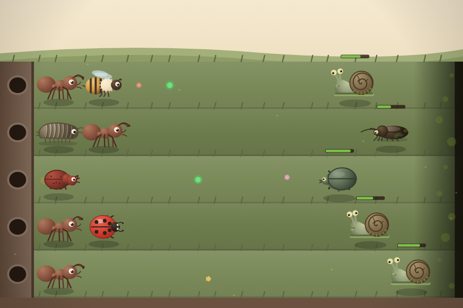

ESP-005Família: pessoal

Insetos vs Zumbis
Formica bellatrix vectorialis
Tower defense com 50 fases, 5 mundos e 5 chefões — e nenhum arquivo de imagem. Cada formiga, cada zumbi e cada pôr do sol é desenhado quadro a quadro no Canvas do Flutter.
Observações do coletor
Projeto solo, do zero. Escrevi a arte inteira em código, 100 % vetorial via
CustomPainter, porque não queria nada com cara de asset pronto.
Arquitetei para escalar: fase é dado, não código, e cada bicho é uma subclasse
com desenho e comportamento separados. 75 testes cobrindo game loop, economia
de néctar, ondas e regras de modo.
- Coleta
- 2.º sem. 2026 · projeto pessoal
- Habitat
- Flutter · Dart · Flame · Canvas